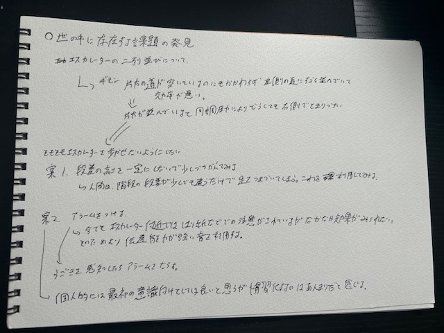
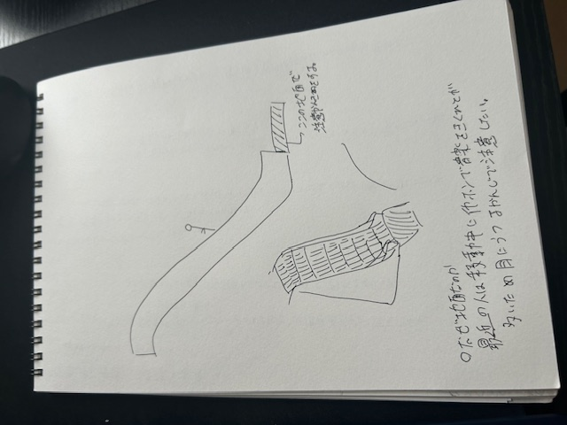

世の中に存在する課題の発見

何が問題なのか
昨今日本ではエスカレーターを歩かないようにしようとしている。
そのために貼り紙などで注意喚起をしているが、
東京はもちろん横浜でもその効果を得ることはできていない。
そこでどうしたら解決できるのかを案を考えてみた。
エスカレーターの段差を少し変えてみる
人間は階段の段差が少し違うだけで躓いてしまうという有名な話がある実際に私も経験したことがある。
それをエスカレータにも使えば
このエスカレーターはよく躓いくから歩かないで止まろうという意識づけができる
と考えた。しかし問題もあるそれは躓きを通り越して転んでしまったときである。そうなるとエスカレーターの構造状
関係のない下の人を巻き込んでしまうリスクがある。そのためエスカレーターの前の地面にその節を書くことでできる限り
の危険を回避できたらと考えた。

アラームを鳴らす
振動を感知してアラームを鳴らすという考えもあったがその音に気づくのかが問題だと感じた。
なぜなら、最近ではイヤホンを付けて移動している人が多いためその音に気付かずにわたり終わってしまうという
ことが起きる可能性が高いと考えた。しかし音を鳴らすことで人々の意識の変化を促すことはできると感じる。